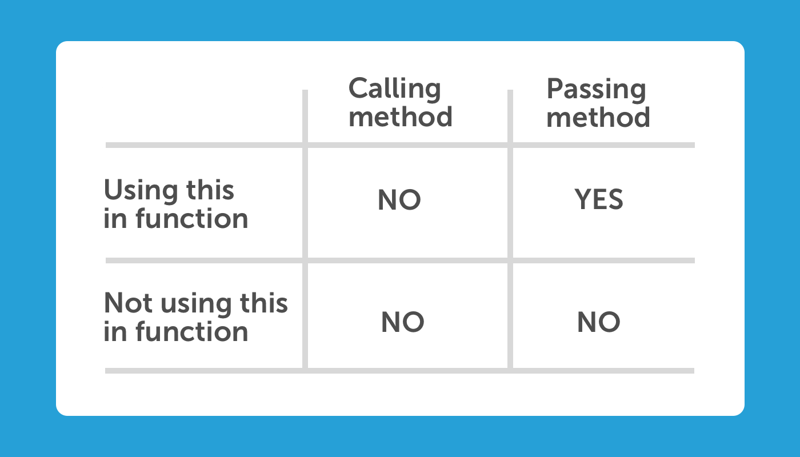

在React的世界，Callback經常會被當作props傳給child，裡面通常帶有this.setState()等改變parent的語句。但在Javascript的世界，this是一個比較複雜的概念，不同情況會產生不同的this，很容易撞上有關的bug（Google一下已經一大堆）。而且使用this前要先進行binding，十分麻煩。
Arrow function（箭頭函式），又名fat-arrow function，是Javascript ES6的新syntax，是最受歡迎的ES6功能。臨床證實，有效改善this binding的問題。
Javascript基礎知識
不要急，先確保自己理解以下概念：
甚麼是this？
In a function definition, this refers to the "owner" of the function.
有點像其他語言如python的self。
var x = this; // Global object，如果在browser裡，this就是[object Window]
function display(){
console.log(this);
}
display(); // 也是global
var person = {
firstName: "John",
lastName : "Doe",
id : 5566,
fullName : function() {
return this.firstName + " " + this.lastName; // this就是當前的person object (owner)
}
};
console.log(person.fullName);
// ES6
class Person {
name = "Hello"
}
var personObj = new Person();
console.log(personObj.name);
https://www.w3schools.com/js/js_this.asp
Callback裡的this, that
使用callback時，我們需要用that來取用owner的owner的this，否則會是undefined，例如：
var jane = {
name: "Jane",
logHello: function (friends) {
var that = this; // 必須
friends.forEach(function (friend) {
console.log(that.name + " says hello to " + friend) // 使用來自owner的that
});
}
}
Non-method function vs method function
// Method function
var obj = {
name: "Hello",
methodFunction: function() {
console.log(this);
}
}
obj.methodFunction(); // {name: "Hello", methodFunction: function}
// Non-method function
var nonMethodFunction = function(){ console.log(this); }
nonMethodFunction(); // Window {0: Window}
小結
沒錯，在JS中this這個概念是非常複雜的，ES5前、ES6、Experimental、strict mode、不同browser，有各式各樣的rules去決定究竟this是甚麼。
但這篇最重要還是在React裡的用法，幸好React中一般用this都是取用component，變化不算太多。
class method中的this
this.setState()是React很常見的function，但在class-based React中，要很小心this是指甚麼。
this陷阱
All function calls in Javascript set a new value of this according to how the function is called.
由於component life cycle methods（e.g. render）是由class instance invoke的，this就等於自己這個component，可以使用this.setState()等等。
但其他Class method未必一定直接由component invoke（例如作為callback），有機會失去this的context，例如：
class Hello {
constructor(){
this.name = "Hello";
}
display(){
console.log(this.name);
}
}
var helloObj = new helloObj();
helloObj.display(); // Hello
var display = helloObj.display;
display(); // TypeError Error: "this" is undefined
有關文章：
- 為甚麼需要bind this?
- https://stackoverflow.com/questions/3127429/how-does-the-this-keyword-work
- https://stackoverflow.com/a/28016676/6025730
- https://stackoverflow.com/questions/36489579/this-within-es6-class-method
.bind()
本來this是不能被assignment改變的，.bind()是ES5推出的功能，可以用在function上，強行指定this的目標。所以要在method裡使用this前，可以在constructor先強行綁定。
class SomeComponent extends Component {
handleClickError() {
// this = ???
this.setState({ value: 1 });
}
constructor() {
// 這時 this = SomeComponent
this.state = {
value: 0
}
this.handleClickSuccessful = this.handleClickError.bind(this);
}
render() {
return (
{/* 這裡用的是constructor裡新建的function */}
<button onClick={this.handleClickSuccessful} />
{/* 沒有bind的普通method function */}
{/* Error: "this.setState" is not a function */}
<button onClick={this.handleClickError} />
);
}
}
甚麼時候需要bind？

不夠簡潔
使用.bind()需要在constructor把所有用作callback的function bind一次。如果有10個，那就是要bind十次，像這樣：
constructor() {
this.callback1 = this.callback1.bind(this);
this.callback2 = this.callback2.bind(this);
this.callback3 = this.callback3.bind(this);
this.callback4 = this.callback4.bind(this);
this.callback5 = this.callback5.bind(this);
this.callback6 = this.callback6.bind(this);
// ...
}
作為完美主義者最討厭這種重複又多餘的做法了。
Arrow function
使用Arrow function可以幫助我們解決.bind()帶來的麻煩。
Arrow Function和一般Function有甚麼分別？
先看看Arrow function的簡介：
Two factors influenced the introduction of arrow functions: shorter functions and non-binding of this.
An arrow function expression has a shorter syntax than a function expression and does not have its own this, arguments, super, or new.target. These function expressions are best suited for non-method functions, and they cannot be used as constructors.
An arrow function does not have its own this; the "this" value of the enclosing execution context is used.
總的來說就是：
- 更方便地define function
- 沒有自己的
this（重點）
arrow function會自動使用這個function被declare時的環境作為this（而非被Call時的環境）。
直接在render使用
class LoggingButton extends React.Component {
handleClick() {
console.log('this is:', this);
}
render() {
// This syntax ensures `this` is bound within handleClick
return (
<button onClick={(e) => this.handleClick(e)}>
Click me
</button>
);
}
}
這麼做(e)=>{}會得到render() context裡的this，而handleClick就會使用這個context中的this。
https://reactjs.org/docs/handling-events.html
缺陷
這做法有它的缺陷，由於render()是一個高使用率的method（每次數據有變都會re-render），而剛才的寫法等同於以下：
render() {
const _handleClick = (e) => this.handleClick(e);
return (
<button onClick={_handleClick}>
Click me
</button>
);
}
每次render時都會產生一個新的function，不是最好的做法。
Babel Transform
Javascript的ES標準是一直更新的，而有一個proposal正在stage-3階段，其中一項建議是在class使用arrow function，可以確保this的binding是class instance。
class LoggingButton extends React.Component {
// This syntax ensures `this` is bound within handleClick.
// Warning: this is *experimental* syntax.
handleClick = () => {
console.log('this is:', this);
}
render() {
return (
<button onClick={this.handleClick}>
Click me
</button>
);
}
}
https://reactjs.org/docs/handling-events.html
此功能還在ES Stage-3 Proposal，日後會被加入成為JS Standard。在原生未支援的時間，我們可以透過Babel使用這功能。
Babel是一個幫助transpile javascript的plugin，一般建立react native project時都會自帶babel，可以把一些javascript引擎不支持的功能加進去，然後輸出時讓babel transpile成valid js。
Babel transform是目前為止我認為最好的解決辦法，可以免除binding的問題，不用每個function都bind一次。
結語

已經越來越多developer傾向使用arrow function
binding這問題是源自於javascript自身，已經源遠流長了，那時候js還沒有class這概念，希望新proposal可以盡快成為標準吧。